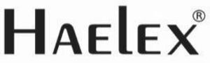

Trade Mark Journal No.2026/010 6 March 2026
WO0000001902290 (5,10)
Office of origin: Singapore
Date of International Registration:1 November 2025
Date of designation in the UK:
1 November 2025

- Class 5
- Pharmaceuticals; pharmaceuticals; pharmaceutical drugs; pharmaceutical creams; pharmaceutical sweets; ocular pharmaceuticals; pharmaceutical tablets; pharmaceutical products; oils for use in pharmacy; pharmaceutical lipsalves; pharmaceutical substances; tablets [pharmaceuticals]; homeopathic pharmaceuticals; pharmaceutical compositions; pharmaceutical preparations; pharmaceutical skin lotions; antidiabetic pharmaceuticals; antibacterial pharmaceuticals; anti-diabetic pharmaceuticals; sanitizing preparations for hospital use; veterinary vaccines; veterinary medicaments; veterinary preparations; cultures for veterinary use; swabsticks for veterinary use; antibiotics for veterinary use; insecticidal veterinary washes; veterinary diagnostic reagents; enzymes for veterinary purposes; greases for veterinary purposes; insecticides for veterinary use; living cells for veterinary use; medical plasters; medical dressings; dressings, medical; medical mouthwashes; medical toothpastes; gums for medical use; medical preparations; cells for medical use; ozone for medical use; swabs for medical use; adhesive tapes for medical use; wipes for medical use; cotton for medical use; ethers for medical use; gluten for medical use; grease for medical use; medical adhesive tapes; tonics for medical use; medical wound dressings; param [medical powders]; pharmaceuticals; ocular pharmaceuticals; tablets [pharmaceuticals]; homeopathic pharmaceuticals; antidiabetic pharmaceuticals; antibacterial pharmaceuticals; anti-diabetic pharmaceuticals; cardiovascular pharmaceuticals; moisturisers [pharmaceuticals]; moisturizers [pharmaceuticals]; pain killers [pharmaceuticals]; empty capsules for pharmaceuticals; gelatin capsules for pharmaceuticals; regimen preparations [pharmaceuticals]; capsules sold empty for pharmaceuticals; sprays for use on the body [pharmaceuticals]; distilled oils for body care [pharmaceuticals]; chemicals for use in aquariums [pharmaceuticals]; starches for dietetic purposes [pharmaceuticals]; chemicals for use in fish tanks [pharmaceuticals]; immunological products for intravenous injections; veterinary preparations for administration by injection; vaccines; viral vaccines; foot rot vaccines; vaccine adjuvants; bacterial vaccines; vaccines for cattle; vaccines for horses; veterinary vaccines; vaccine preparations; vaccines against flu; antiparasitic vaccines; vaccines for human use; oral vaccine preparations; human vaccine preparations; vaccines against viral infection; veterinary vaccines for bovine animals; vaccines against pneumococcal infections; oral analgesics; oral cavity drugs; oral disinfectants; oral contraceptives; oral rehydration salts; oral cephem antibiotics; medicated oral care gels; oral vaccine preparations; bandages for the oral cavity; materials for oral prophylaxis; medicated brush-on oral care gels; medicated preparations for oral care; ibuprofen for use as an oral analgesic; oral electrolytes for medical purposes; medicated preparations for oral hygiene; pharmaceutical preparations for oral use; enteral feeding preparations for oral feeding; preparations for oral hygiene [medicated dentifrices]; medicated preparations for the care of the oral cavity; preparations for oral cleaning [medicated dentifrices]; liquid bandages; liquid antipruritic; liquid antipruritics; liquid bandage sprays; liquid herbal supplements; antiseptic liquid bandages; liquid vitamin supplements; medicaments in liquid form; liquid bandages for skin wounds; liquids for preserving contact lenses; liquid cleaning compositions for contact lens; liquid adhesives for use as surgical dressings; liquid preparations [medicated] for cleaning the hands; liquid preparations for the disinfection of dental apparatus; liquid preparations for the disinfection of medical apparatus; liquid preparations for the sterilisation of dental apparatus; liquid preparations for the sterilisation of medical apparatus; liquid preparations for the disinfection of veterinary equipment; liquid preparations for the sterilisation of veterinary equipment; flea sprays; medicinal sprays; anti-insect spray; anti-insect sprays; anti-allergy sprays; antibacterial sprays; anti-bacterial sprays; liquid bandage sprays; medicated mouth spray; deodorising room sprays; deodorizing room sprays; medicated throat sprays; anti-inflammatory sprays; decongestant nasal sprays; throat sprays [medicated]; mouth sprays for medical use; herbal sprays for medical use; nasal sprays for medical purposes; medicated nasal spray preparations; cooling sprays for medical purposes; orgasm creams; anti-itch creams; medicated creams; antibiotic creams; antibiotic creams; spermicidal creams; therapeutic creams; wound healing creams; dermatological creams; hydrocortisone creams; medicated bath creams; medicated body creams; medicated foot creams; medicated skin creams; pain relieving creams; pharmaceutical creams; corn and callus creams; medicated night creams; nappy cream [medicated]; medicated barrier creams; tube gauze bandages; anti-tuberculous preparations; enteral feeding preparations for tube feeding; intravenous solutions for medical purposes; immunological products for intravenous injections; nutritional preparations for medical use for intravenous infusion; nutritional solutions for medical use for intravenous administration.
- Class 10
- Inhalers; inhaler devices for administering medicaments; inhalers for medical use; medical inhalers; nasal and oral inhalers; inhalers for administering aerosol medications for the treatment of respiratory diseases; inhalers for the evaporation of aromatherapeutical substances; nicotine inhalers for medical purposes; oxygen inhalers for medical use.
ENDURE MEDICAL TECHNOLOGIES PTE LTD